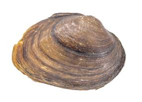
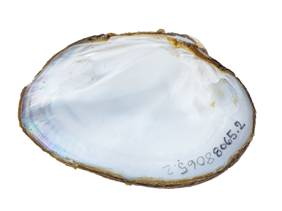

Fusconaia iheringi (Wright, 1898)
Balcones Spike

Fusconaia iheringi – San Gabriel River [Brazos River drainage], length 71.6 mm.
Identification
Shell structure: thin in smaller specimens but becoming moderately thick in larger individuals; compressed to moderately inflated.
Shell outline: subrhomboidal to suboval; may present a shallow depression or sulcus anterior to the posterior ridge.
Posterior ridge: sharp to rounded, may show a second or third ridge.
Shell color: yellow-green, red-brown, brown, or black; surface often lightly dull to subglossy.
Rays: may have faint green or brown rays.
Shell texture: without sculpture or with small pustules and/or dorsal-to-ventral ridges that resemble small folds mid-disk; may have faint ridges along the posterior slope.
Umbo: low and broad; umbo cavity shallow to moderately deep and slightly above hinge line.
Umbo sculpture: some may have irregular ridges.
Pseudocardinal teeth: thin to thick, rough, triangular, 2 divergent teeth in left valve and 1 in right valve.
Lateral teeth: short to moderately long, straight to slightly curved, 2 in left valve, 1 in right valve.
Interdentum: short to moderately long, narrow to wide.
Nacre: white, iridescent posteriorly.
Other: not sexually dimorphic.
General Range
Endemic to the Brazos and Colorado drainages of central Texas.
Habitat
Occurs in small streams to medium-sized rivers in habitats such as riffles and runs with flowing water, occasionally found in nearshore habitats such as banks and backwaters or pools.
Legal listing status
USFWS: None